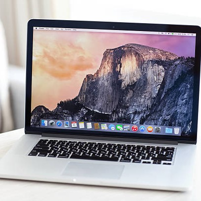

Спадът в продажбите на персонални компютри се приписва на много места по необходимостта от бърза промяна поради пандемични промени в работните модели и много други фактори. Делът на Apple от общия пазар обаче нараства, особено в определени пазарни сегменти. Последният пазарен дял показва, че компанията преварва всички свои конкуренти в сегмента на таблетите и прави значителна разлика в продажбите на лаптопи. Всички по-големи купувачи на продукти на Apple за първи път предизвикват нов брой интереси. Докато продажбите на Mac продължават да поставят фирмени рекорди, а Apple продължава да работи за обединяването на Mac и iPad като производствени партньори, компанията е готова да разшири още повече на корпоративния пазар.